Intended learning outcomes (ILO’s)
By the end of this session, you should be able to:
- Calculate basic descriptive statistics in R:
- Mean
- Median
- Variance
- Standard deviation (SD)
- Quantiles
- Inter quartile range (IQR)
- Range
- Make basic graphs in R including:
- Histograms
- Scatter diagrams
- Bar charts
- Box and whisper plot
Some of this you will have covered previously - this session has been designed for you to practice these skills on new data sets in a different format. In addition, in this tutorial we will be building on some of the skills you learnt in Key Concepts regarding graph marking in R.
The data for today
Today we will be using two data sets, one is looking at sleep patterns in mammals and the other is an experiment on plant growth.
First, set your working directory to the R folder that you created on your desktop in the loading data into R tutorial. Check that your working directory has been set correctly using getwd().
All set?
Now, head to Blackboard and download the two .xlsx files called:
- plant_growth.xlsx
- mammals_sleep.xlsx
PLEASE NOTE You will need to convert these to CSV files before we begin. Need a reminder? Head over to the loading data into R tutorial.
To check that these files are stored in your working directory, we can use the following code:
list.files ("~/Desktop/R/") #insert path to your working directoryBefore we start making our graphs, let’s import the CSV files into R and assign them a name.
mammals_sleep <- read.csv("~/Desktop/R/mammals_sleep.csv", header = TRUE, sep = ",")
plant_growth <- read.csv("~/Desktop/R/plant_growth.csv", header = TRUE, sep = ",")Let’s quickly take a look at part of the data:
head(mammals_sleep)head(plant_growth)The head function displays the first 6 rows of the data, allowing you to take quick glance at your data set.
The tail function does the same but for the bottom 6 rows of the data.
If you wanted to display 10 rows of the data - instead of 6 - we could add the following bit of information:
head(mammals_sleep, n = 10)Additional information
Links to information about datasets:
Mammals: https://www.openintro.org/data/index.php?data=mammals
http://lib.stat.cmu.edu/datasets/sleep
Plant growth: https://stat.ethz.ch/R-manual/R-devel/library/datasets/html/PlantGrowth.html
Before we begin making graphs in R, let’s refresh our knowledge of calculating basic statistics in R.
Basic statistics in R
Now that we have our data file loaded into R we can calculate some basic descriptive statistics to find out a little more about our data.
For the following exercises, we will be focusing on the mammals_sleep file. Spend some time familiarising yourself with the data before we begin. Use the ‘View’ function below to do this.
View(mammals_sleep)If you are not sure what the answers are to the questions below, have a go at running the code in R before answering.
Now that you have seen how to calculate mean in R, use the interactive R piece below to calculate median, standard deviation (SD), and interquartile range (IQR) before answering the questions below:
Some other useful descriptive statistics to know how to calculate in R are variance, quantiles and the range. To calculate these, use the following code:
var(mammals_sleep$brain_wt_kg)
quantile(mammals_sleep$brain_wt_kg)
range(mammals_sleep$brain_wt_kg) #please note, range in R only gives you the max and min and does not calculate the difference.Want some more information on descriptive statistics?
Ready to make some graphs?

Making graphs in R
In the following sections we are going to look at the following graphs:
- Scatter graph
- Histograms
- Bar charts
- Box and whisper plot
In this section of the tutorial, we will be extending your knowledge of building graphs in R that you covered in Key Concepts.
Scatter plot
For the first graph we are going to continue working with the mammals_sleep data; we are going to look at the relationship between body weight (kg) vs. brain weight in (kg) in mammals. We are going to try and answer the question, does brain size increase as mammals get bigger? This is called allometric scaling.
This data set contains body weight (kg) and brain weight (kg) data for 62 species of mammal!
plot(mammals_sleep$body_wt_kg, mammals_sleep$brain_wt_kg)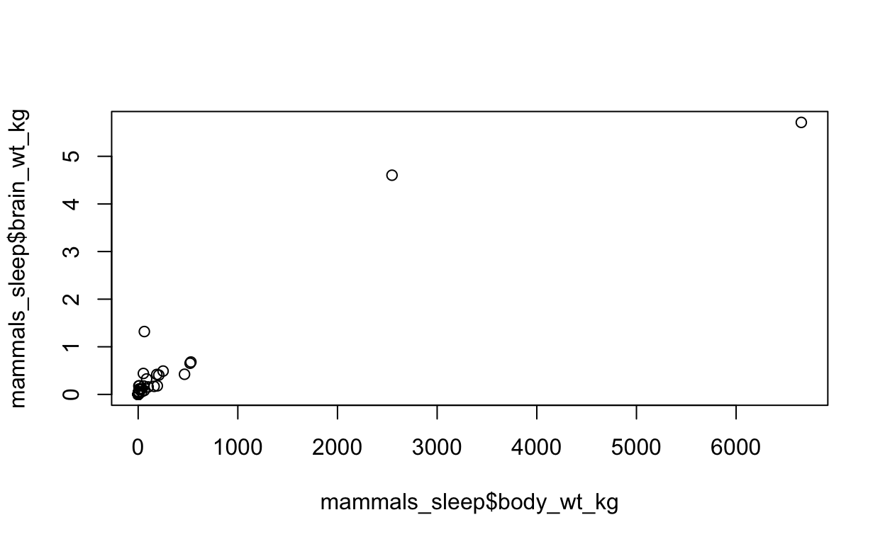
What is the issue with this graph?
Because there is a large range of values in this data set for both body_wt_kg and brain_wt_kg the data looks skewed to the left of the graph. What is the best way around this?
How to solve this?
To do logarithms in R, we can use the log() function. To do this for graphs, we use the same code as we did above but add log() in front of our data!
plot(log(mammals_sleep$body_wt_kg), log(mammals_sleep$brain_wt_kg), xlab = "Body weight (kg) on log scale", ylab = "Brain weight (kg) on log scale")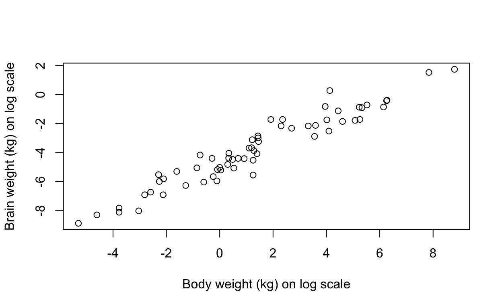
Say that we want to quantify this relationship between body weight (kg) and brain weight (kg). For this, we can use linear regression! To do this in R, we use the function lm().
Let’s see this in action:
plot(log(mammals_sleep$body_wt_kg), log(mammals_sleep$brain_wt_kg), xlab = "Body weight (kg) on log scale", ylab = "Brain weight (kg) on log scale")
fit <- lm(log(brain_wt_kg) ~ log(body_wt_kg), data = mammals_sleep)
#find out R2
summary(fit)##
## Call:
## lm(formula = log(brain_wt_kg) ~ log(body_wt_kg), data = mammals_sleep)
##
## Residuals:
## Min 1Q Median 3Q Max
## -1.71550 -0.49228 -0.06162 0.43597 1.94829
##
## Coefficients:
## Estimate Std. Error t value Pr(>|t|)
## (Intercept) -4.77297 0.09604 -49.70 <2e-16 ***
## log(body_wt_kg) 0.75169 0.02846 26.41 <2e-16 ***
## ---
## Signif. codes: 0 '***' 0.001 '**' 0.01 '*' 0.05 '.' 0.1 ' ' 1
##
## Residual standard error: 0.6943 on 60 degrees of freedom
## Multiple R-squared: 0.9208, Adjusted R-squared: 0.9195
## F-statistic: 697.4 on 1 and 60 DF, p-value: < 2.2e-16abline(fit, col = "red")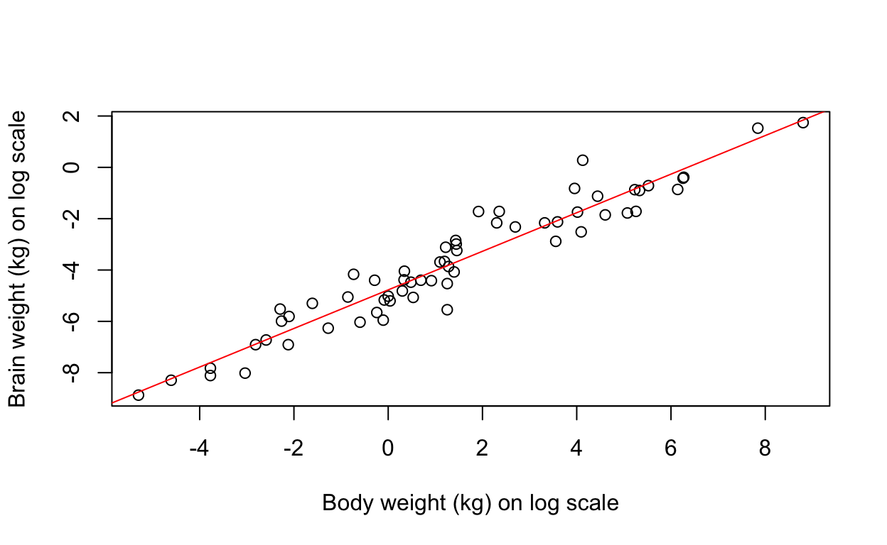
In the above piece of code we assign the lm to the object name ‘fit’: this makes it easier to call upon our lm again without having to write all of that code out multiple times!
When we call ‘summary(fit)’ this allows us to look at the summary of the linear regression. The piece of code abline(fit, col = “red”) plots the linear regression onto our graph and allows us to look at this relationship between body weight (kg) and brain weight (kg).
To find out more about scatter plots, try ?plot in R or have a look at some of the additional resources below:
Link: Quick-R guide to Scatterplots
Link: STHDA guide to scatterplots
Histogram
For the next part of this tutorial we are going to use the plant_growth data set that we loaded into our working directory earlier in this tutorial.
I would advise that you look over the data again before we start:
head(plant_growth)A histogram is a visual representation of the distribution of a dataset. The shape of a histogram allows us to easily see where a large amount of the data is situated and where there is very little data to be found.
In the plant growth data set there are 3 groups, a control group, and 2 treatment groups. The dependent variable in this data collection was weight which is in column 1. If we wanted to explore the distrubition in weight among our control group, we could use a histogram.
First, we need to subset out our control group using the following code:
#subsetting allows us to extract a certain part of the data that we are interested in. In this example, we are interested in a particular group within a study - the control group.
control_group <- subset(plant_growth, plant_growth$group=="ctrl")
#If we wanted to subset the 2nd treatment group, we could use plant_growth$group=="trt2" and so on.Then we can plot the data using the hist function:
hist(control_group$weight, xlab = "Weight", main = "", col = "darkgrey")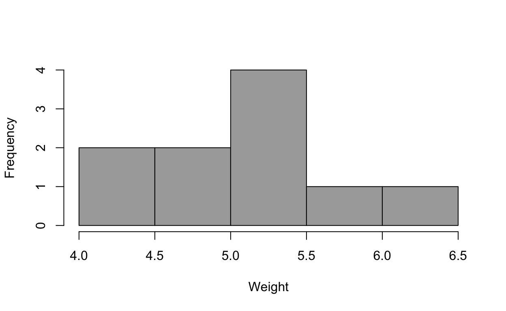
# leaving main = "" blank removes the title from out graph. Typically, graphs in papers do not include a title but include a figure legend to describe the figure.
#col = "" is the colour of our histogram, this could be changed to col = "red" or col = "blue" for example.To find out more about the histograms, try ?hist in R or have a look at some of the additional resources below:
Link: Datacamp guide to histograms
Link: Data mentor guide to histograms
Bar chart
A bar chart represents data in rectangular bars with length of the bar proportional to the value of the variable.
For this part of the tutorial, we are going to look at bar charts of varying difficulty.
Bar chart 1
For our first bar graph, we are going to look at the frequency of our categorical variable (plants) in each group.
#convert data to table
table(plant_growth$group)##
## ctrl trt1 trt2
## 10 10 10#create a barplot
barplot(table(plant_growth$group), xlab = "Group", ylab = "Frequency", names = c("Control", "Treatment 1", "Treatment 2"))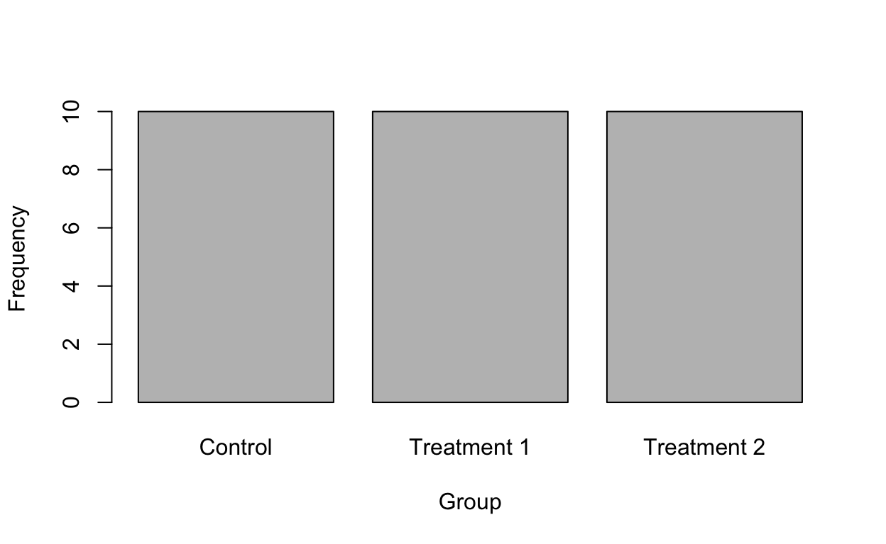
Bar chart 2
For our second bar chart, we are going to look at the mean weight of each group in the plant growth experiment. To start with, I am going to show you a smart way of calculating all of the means and standard deviations (SD) of the various groups weights.
# the factor function shows you the different levels of a categorical variable (i.e. different groups). The square brackets with a ,2 in represent all rows and the whole second column - if we wanted to look at just the first row and second column we would use 'factor(plant_growth [1,2])'.
factor_plant_growth <- factor(plant_growth [,2])
factor_plant_growth## [1] ctrl ctrl ctrl ctrl ctrl ctrl ctrl ctrl ctrl ctrl trt1 trt1 trt1 trt1 trt1
## [16] trt1 trt1 trt1 trt1 trt1 trt2 trt2 trt2 trt2 trt2 trt2 trt2 trt2 trt2 trt2
## Levels: ctrl trt1 trt2# tapply is a useful function that allows us calculate multiple means or SDs at once - this is very useful and can save a lot of time!
tapply (plant_growth$weight, factor_plant_growth, mean)## ctrl trt1 trt2
## 5.032 4.661 5.526tapply (plant_growth$weight, factor_plant_growth, sd)## ctrl trt1 trt2
## 0.5830914 0.7936757 0.4425733#tapply could also be applied to other descriptive statistics such as median.# the below piece of code is telling R to make a bar plot of the mean data from each group in our plant growth experiment. To do this we add the tapply code above into the plot:
plant_growth_weight_barplot <- barplot (tapply(plant_growth$weight, factor_plant_growth, mean), xlab = "Group", ylab = "Weight", ylim = c(0,6), names = c("Control", "Treatment 1", "Treatment 2"))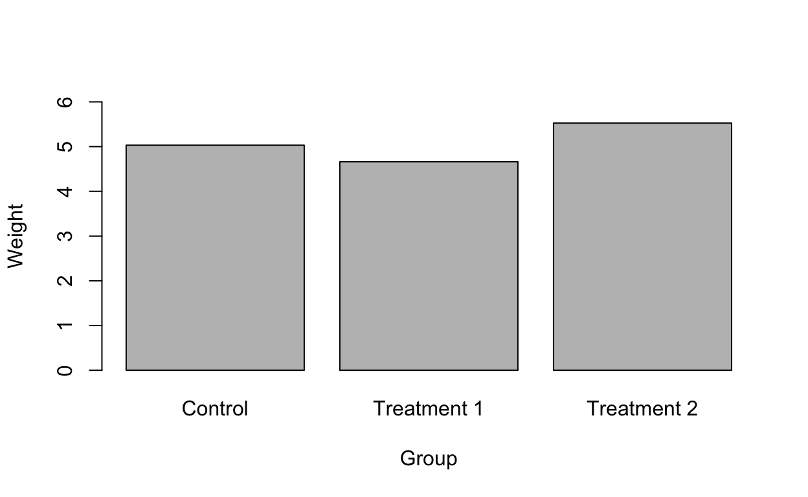
#OPTIONAL: this code is an extension of the above and applies some advanced customisation options to make the graph look pretty! Rather than explaining everything here, I have put a link below which shows you more about the customisation options with bar plots.
plant_growth_weight_barplot <- barplot (tapply(plant_growth$weight, factor_plant_growth, mean), cex.axis = 1, ylim = c(0,6), col = c("grey","lightgrey", "darkgrey"), font = 2, font.lab = 2, cex = 1, lwd = 3, axis.lty = 1, xlab = "Group", ylab = "Weight", cex.lab = 1, xpd = FALSE, names = c("Control", "Treatment 1", "Treatment 2"))
#ylim = sets the y limits
#cex = various sizes
#lty = line type
# col with 3 different colours adds a different colour to each experimental group
# this code below wraps a box around the bar chart
box (lwd = 3)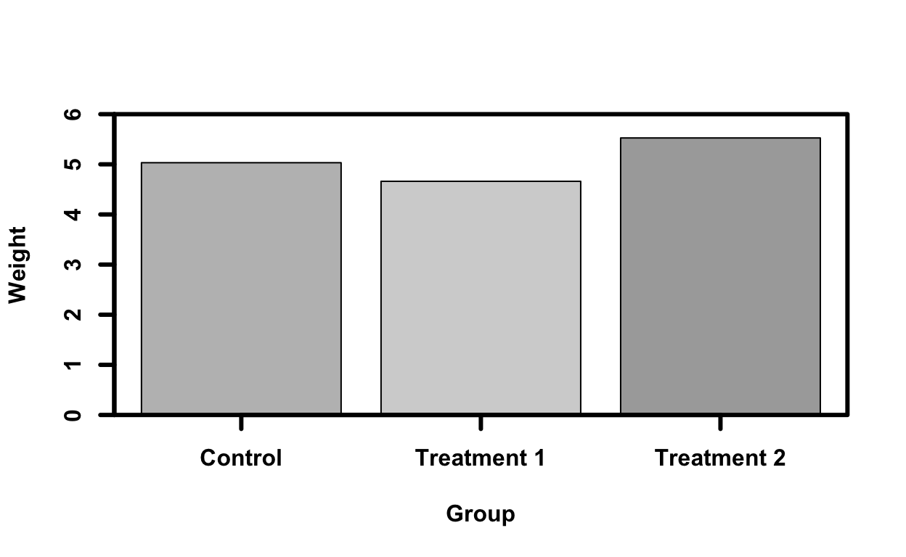
I would encourage you all to copy and paste this code into your own R and have a go at changing some of the customisation options.
If you want to know more about customisation of R bar charts check out the following link: Advanced R barplot customisation
Task: Making your own bar plot
R has many inbuilt datasets, one of these datasets is called iris. More specifically, the iris dataset contains four measurements for 150 flowers representing three species of iris. Using this iris dataset, make a bar plot of the mean petal length among the 3 species.
Link to R documentation for iris data
# The datasets package needs to be loaded to access our data
# For a full list of these datasets, type library(help = "datasets")
library(datasets)
head(iris)Have a go at making the bar graph then answer the following question:
Task: The answers
factor_iris <- factor(iris [,5]) # all rows (blank before the comma; column 5 contains the species categorical data
factor_iris## [1] setosa setosa setosa setosa setosa setosa
## [7] setosa setosa setosa setosa setosa setosa
## [13] setosa setosa setosa setosa setosa setosa
## [19] setosa setosa setosa setosa setosa setosa
## [25] setosa setosa setosa setosa setosa setosa
## [31] setosa setosa setosa setosa setosa setosa
## [37] setosa setosa setosa setosa setosa setosa
## [43] setosa setosa setosa setosa setosa setosa
## [49] setosa setosa versicolor versicolor versicolor versicolor
## [55] versicolor versicolor versicolor versicolor versicolor versicolor
## [61] versicolor versicolor versicolor versicolor versicolor versicolor
## [67] versicolor versicolor versicolor versicolor versicolor versicolor
## [73] versicolor versicolor versicolor versicolor versicolor versicolor
## [79] versicolor versicolor versicolor versicolor versicolor versicolor
## [85] versicolor versicolor versicolor versicolor versicolor versicolor
## [91] versicolor versicolor versicolor versicolor versicolor versicolor
## [97] versicolor versicolor versicolor versicolor virginica virginica
## [103] virginica virginica virginica virginica virginica virginica
## [109] virginica virginica virginica virginica virginica virginica
## [115] virginica virginica virginica virginica virginica virginica
## [121] virginica virginica virginica virginica virginica virginica
## [127] virginica virginica virginica virginica virginica virginica
## [133] virginica virginica virginica virginica virginica virginica
## [139] virginica virginica virginica virginica virginica virginica
## [145] virginica virginica virginica virginica virginica virginica
## Levels: setosa versicolor virginicatapply (iris$Petal.Length, factor_iris, mean)## setosa versicolor virginica
## 1.462 4.260 5.552tapply (iris$Petal.Length, factor_iris, sd)## setosa versicolor virginica
## 0.1736640 0.4699110 0.5518947# the below piece of code is telling R to make a bar plot of the mean data from each group in our plant growth experiment.
iris_barplot <- barplot (tapply (iris$Petal.Length, factor_iris, mean), xlab = "Species", ylab = "Petal length (cm)", ylim = c(0,6))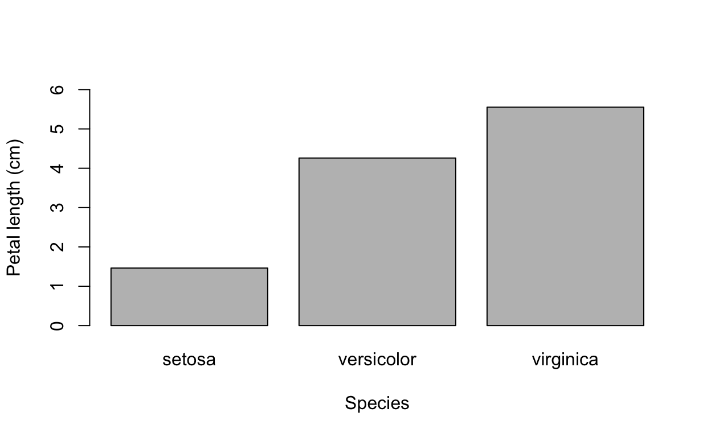
# OPTIONAL with customisation
iris_barplot <- barplot (tapply (iris$Petal.Length, factor_iris, mean), cex.axis = 1, ylim = c(0,6), col = c("grey","lightgrey", "darkgrey"), font = 2, font.lab = 2, cex = 1, lwd = 3, axis.lty = 1, xlab = "Species", ylab = "Petal length (cm)", cex.lab = 1, xpd = FALSE)
box (lwd = 3)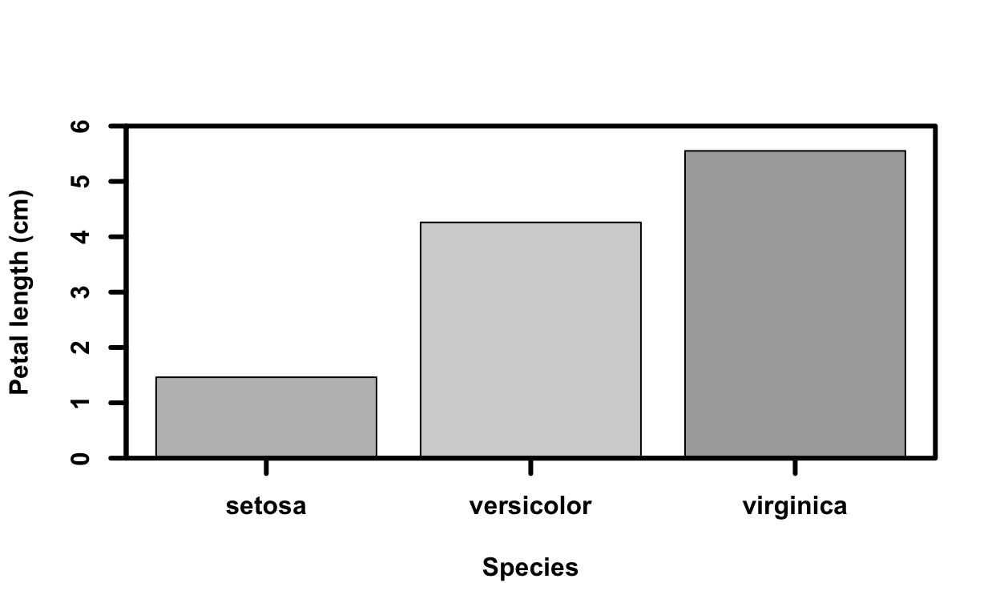
Box and Whisper plots
The boxplot() function shows us how the distribution of a numerical variable (on the y axis) differs across the unique levels of a second variable (x). Boxplots visualise data distribution through their quartiles.
We are going to use a boxplot() to compare the weight across our three groups in the plant growth data.
boxplot(weight ~ group, data = plant_growth, main = "", xlab = "Group", ylab = "Weight", col = c("darkred", "darkblue", "darkgreen"), names = c("Control", "Treatment 1", "Treatment 2"))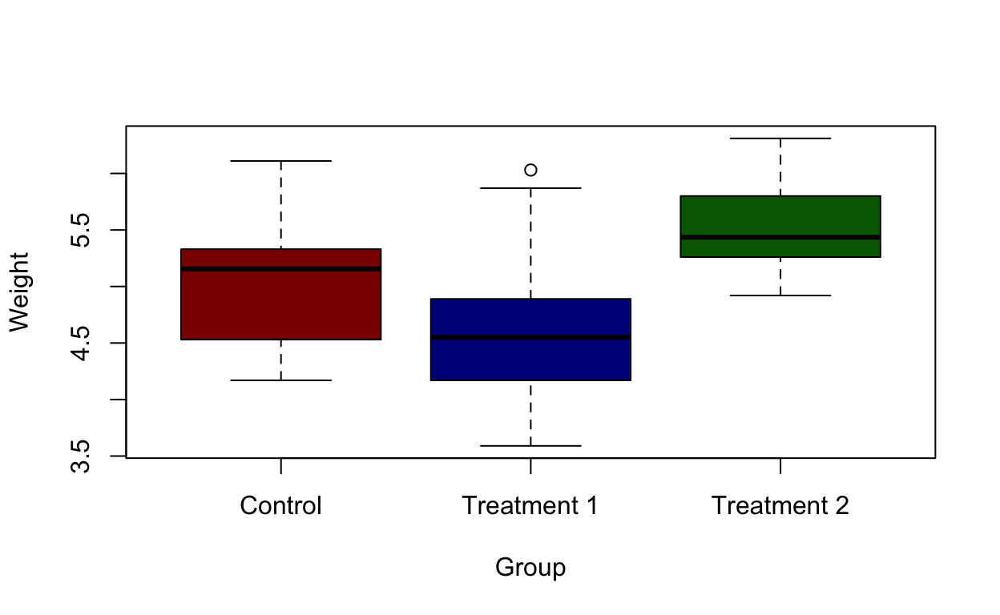
Task: Making your own box and whisper plot
Using the iris dataset again, I would like you to make a box and whisper plot of the sepal width among the various species in the dataset.
Have a go at making the box and whisper plot then answer the following question:
Task: The answers
boxplot(iris$Sepal.Width ~ iris$Species, data = iris, main = "", xlab = "Species", ylab = "Sepal width (cm)", col = c("darkred", "darkblue", "darkgreen"))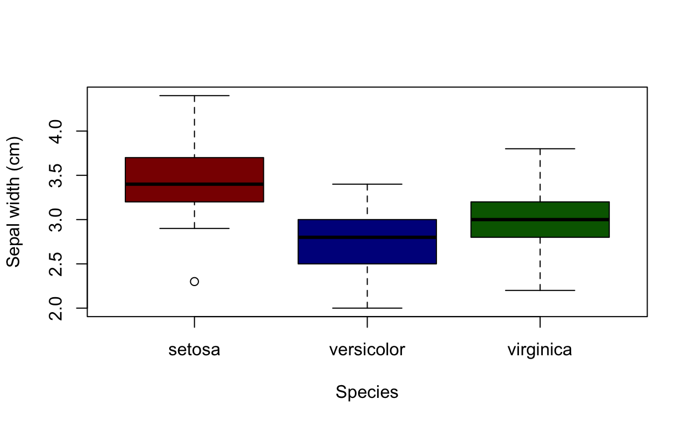
Additional resources: